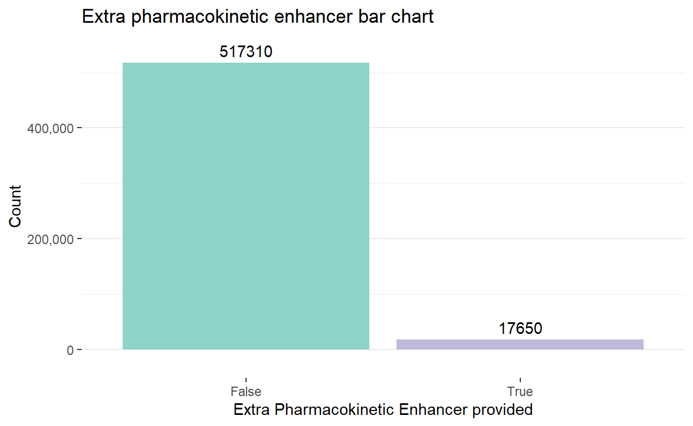
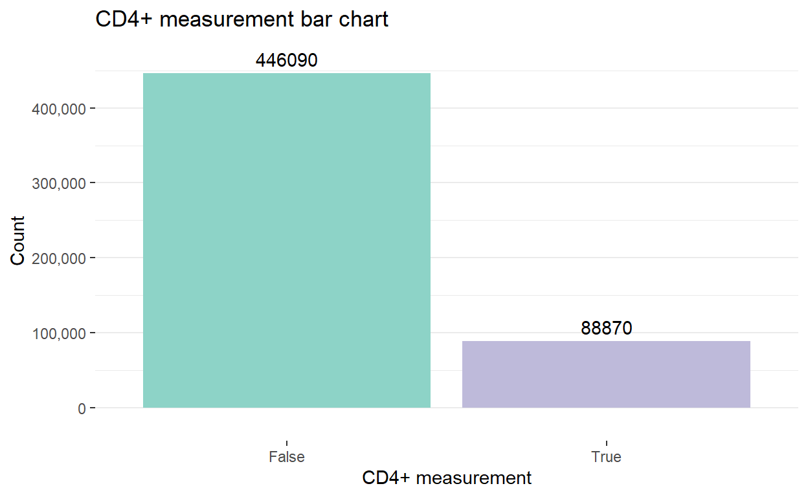
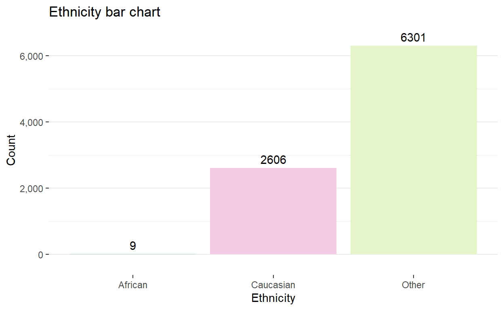
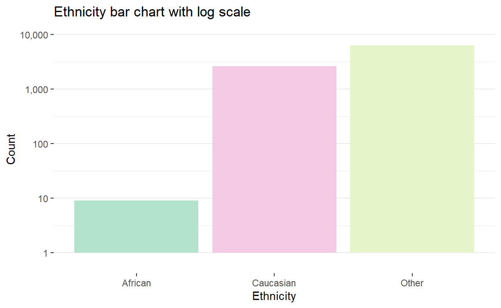

More figure examples.
This dataset can be found at:
Kuo, Nicholas (2022). The Heath Gym Synthetic HIV Dataset. figshare. Dataset. https://doi.org/10.6084/m9.figshare.19838470.v1
More information on the dataset is available at: Kuo et al. (2022). The Health Gym: Synthetic Health-Related Datasets for the Development of Reinforcement Learning Algorithms. arXiv preprint arXiv:2203.06369.
art_hiv %>%
rename_with(function(x) gsub(" ", "_", x)) %>%
rename_with(function(x) gsub("\\(|\\)|\\.|-", "", x)) %>% # remove ().-
mutate(Gender = factor(Gender, labels = c("1" = "Male",
"2" = "Female")),
Ethnicity = factor(Ethnic, labels = c("2" = "African",
"3" = "Caucasian",
"4" = "Other")),
Base_Drug_Combo = factor(Base_Drug_Combo,
labels = c("0" = "FTC + TDF",
"1" = "3TC + ABC",
"2" = "FTC + TAF",
"3" = "DRV + FTC + TDF",
"4" = "FTC + RTVB + TDF",
"5" = "Other")),
Comp_INI = factor(Comp_INI, labels = c("0" = "DTG",
"1" = "RAL",
"2" = "EVG",
"3" = "Not Applied")),
Comp_NNRTI = factor(Comp_NNRTI, labels = c("0" = "NVP",
"1" = "EFV",
"2" = "RPV",
"3" = "Not Applied")),
Extra_PI = factor(Extra_PI, labels = c("0" = "DRV",
"1" = "RTVB",
"2" = "LPV",
"3" = "RTV",
"4" = "ATV",
"5" = "Not Applied")),
Extra_pkEn = factor(Extra_pkEn, labels = c("0" = "False",
"1" = "True")),
VL_M = factor(VL_M, labels = c("0" = "False",
"1" = "True")),
CD4_M = factor(CD4_M, labels = c("0" = "False",
"1" = "True")),
Drug_M = factor(Drug_M, labels = c("0" = "False",
"1" = "True")),
PatientID = factor(PatientID),
Ethnic = NULL) %>%
rename(Row_Number = "1") -> art_hiv
# Note: No observations list Asian ethnicity, hence this label was not used.There are 534960 rows and 16 columns in the dataframe.
A description of the columns is provided in this table.
Although the description of the Ethnicity column includes Asian,
no one was listed as having this ethnicity in the data.
col_desc <- c("An integer indicating row number",
"Viral Load (copies per mL)",
"CD4 Absolute Count (copies per mm^3)",
"CD4 Relative Count (copies per mm^3)",
"Gender, male or female",
"Base Drug Combination",
"Complementary Integrase Inhibitor",
"Complementary Non-Nucleoside Reverse Transcriptase Inhibitor",
"Extra Protease Inhibitor",
"Extra Pharmacokinetic Enhancer (y/n)",
"Viral load measured (y/n)",
"CD4 measured (y/n)",
"Drug recorded (y/n)",
"An integer indicating patient ID",
"An integer indicating timepoints",
"Ethnicity, Asian, African, Caucasian or other")
kable(cbind(lapply(art_hiv, class), col_desc),
col.names = c("Column", "Class", "Column description"))| Column | Class | Column description |
|---|---|---|
| Row_Number | numeric | An integer indicating row number |
| VL | numeric | Viral Load (copies per mL) |
| CD4 | numeric | CD4 Absolute Count (copies per mm^3) |
| Rel_CD4 | numeric | CD4 Relative Count (copies per mm^3) |
| Gender | factor | Gender, male or female |
| Base_Drug_Combo | factor | Base Drug Combination |
| Comp_INI | factor | Complementary Integrase Inhibitor |
| Comp_NNRTI | factor | Complementary Non-Nucleoside Reverse Transcriptase Inhibitor |
| Extra_PI | factor | Extra Protease Inhibitor |
| Extra_pkEn | factor | Extra Pharmacokinetic Enhancer (y/n) |
| VL_M | factor | Viral load measured (y/n) |
| CD4_M | factor | CD4 measured (y/n) |
| Drug_M | factor | Drug recorded (y/n) |
| PatientID | factor | An integer indicating patient ID |
| Timepoints | numeric | An integer indicating timepoints |
| Ethnicity | factor | Ethnicity, Asian, African, Caucasian or other |
No visualisation is provided for Row_Number, Timepoints or for Patient_ID.
There are 60 rows per patient, each for a different point in time and 8916 patients.
art_hiv %>%
ggplot(aes(x = VL)) +
geom_histogram() +
scale_y_continuous(labels = scales::label_comma(),
name = "Count") +
scale_x_continuous(labels = scales::label_comma(),
name = "Viral Load (copies per mL)") +
ggtitle("Viral load histogram")art_hiv %>%
ggplot(aes(x = VL)) +
geom_histogram() +
scale_y_sqrt(labels = scales::label_comma(),
name = "Count",
# added breaks for low counts
breaks = c(10^3, 10^4, 5*10^4, 10^5, 1.5*10^5, 2*10^5)) +
scale_x_sqrt(labels = scales::label_comma(),
breaks = c(100, 10^3, 5*10^3, 10^4, 2.5*10^4, 5*10^4, 7.5*10^4),
name = "Viral Load (copies per mL)") +
ggtitle("Viral load histogram with square root transformation of both axes")I chose to apply a square-root transformation to both axes to aid visibility of low values. The square-root transformation was chosen over a log transformation to change the apparent distribution shape less.
art_hiv %>%
filter(Timepoints %in% seq(0, 59, 8)) %>%
ggplot(aes(x = VL)) +
geom_histogram(binwidth = 5000) +
scale_y_continuous(labels = scales::label_comma(),
name = "Count") +
scale_x_continuous(labels = scales::label_comma(),
name = "Viral Load (copies per mL)") +
facet_wrap(.~factor(Timepoints), ncol = 3) +
ggtitle("Viral load histograms for selected timepoints")art_hiv %>%
filter(Timepoints %in% seq(0, 59, 8)) %>%
ggplot(aes(x = VL)) +
geom_histogram() +
scale_y_sqrt(labels = scales::label_comma(),
# default breaks overlapped
breaks = c(10, 250, 10^3, 2.5*10^3, 5*10^3),
name = "Count") +
scale_x_sqrt(labels = scales::label_comma(),
name = "Viral Load (copies per mL)",
# default breaks overlapped
breaks = c(100, 5*10^3, 2.5*10^4, 7.5*10^4)) +
facet_wrap(.~factor(Timepoints), ncol = 3) +
ggtitle("Viral load histograms for selected timepoints with transformed axes")Histograms of viral load displayed for selected time points. A square root transformation has been applied to each axis. This aids visibility of low values and facilitates comparison with the main histograms for viral load.
There is a ridge plot of viral load presented near the end of the document, placed there due to its length.
art_hiv %>%
ggplot(aes(x = CD4)) +
geom_histogram() +
ylab("Count") +
xlab("CD4+") +
ggtitle("Absolute CD4+ histogram") +
scale_y_continuous(labels = scales::label_comma())art_hiv %>%
ggplot(aes(x = CD4)) +
geom_histogram() +
ylab("Count") +
xlab("CD4+") +
scale_x_sqrt(breaks = c(100, 400, 1000, 2500, 5000, 10000, 15000)) +
scale_y_sqrt(labels = scales::label_comma(),
breaks = c(10^2, 2.5*10^3, 10^4, 3*10^4, 5*10^4, 10^5)) +
ggtitle("Viral load histogram with square root transformation of both axes")art_hiv %>%
mutate(high_rel = if_else(Rel_CD4 >= 100, "high", "expected")) %>%
ggplot(aes(x = Rel_CD4, fill = high_rel)) +
geom_histogram() +
geom_vline(xintercept = 100, linetype = "longdash", alpha = 0.25) +
ggtitle("Relative CD4+ histogram") +
xlab("Relative CD4+") +
scale_fill_manual("Rel_CD4 >= 100?",
values = c("#1b9e77", "#d95f02"),
labels = c("No", "Yes"))art_hiv %>%
mutate(high_rel = if_else(Rel_CD4 >= 100, "high", "expected")) %>%
ggplot(aes(x = Rel_CD4, fill = high_rel)) +
# I tried changing bin or bin_width to have all >= 100 on one side but failed
geom_histogram(bins = 20) +
geom_vline(xintercept = 100, linetype = "longdash", alpha = 0.25) +
ggtitle("Relative CD4+ histogram with square root transformation to both axes") +
scale_x_sqrt(breaks = c(5, 25, 50, 75, 100, 200, 300, 400),
name = "Relative CD4+") +
scale_y_sqrt(labels = scales::label_comma(),
name = "Count",
breaks = c(100, 10^3, 10^4, 3*10^4, 6*10^4, 9*10^4)) +
# this would be neater if I used LaTex for the symbol
scale_fill_manual("Rel_CD4 >= 100?",
values = c("#1b9e77", "#d95f02"),
labels = c("No", "Yes"))art_hiv %>%
group_by(PatientID, Gender) %>%
filter(row_number(PatientID) == 1) %>%
ggplot(aes(x = Gender, fill = Gender)) +
geom_bar() +
scale_y_continuous(labels = scales::label_comma(),
name = "Count",
# This fixes an issue with text being clipped at the top
expand = expansion(mult = 0.1)) +
scale_fill_manual(values = c("#8dd3c7", "#bebada")) +
theme_bw() +
theme(panel.border = element_blank(),
panel.grid.major.x = element_blank(),
legend.position = "None") +
ggtitle("Patient gender bar chart") +
# vjust here shifts the text fully on top of the bar
stat_count(geom = "text", aes(label = after_stat(count)), vjust = -0.5)art_hiv %>%
# Not sure how to programmatically reorder according to size
# while keeping "Other" on the end, so manual it is
mutate(Base_Drug_Combo = factor(Base_Drug_Combo,
levels = c("FTC + TDF",
"3TC + ABC",
"DRV + FTC + TDF",
"FTC + RTVB + TDF",
"FTC + TAF",
"Other"))) %>%
ggplot(aes(x = Base_Drug_Combo, fill = Base_Drug_Combo)) +
geom_bar() +
scale_y_continuous(labels = scales::label_comma(),
name = "Count") +
# Without modification the labels overlap
scale_x_discrete(labels = gsub("\\s", "\n", levels(art_hiv$Base_Drug_Combo)),
name = "Base Drug Combination") +
# I tried to put a little bit of thought into the colours
# e.g. 3TC & ABC don't appear elsewhere so no blue tie in
# I kept these colours for all categorical >2 variables
scale_fill_manual(values = c("#b3e2cd", "#fdcdac", "#cbd5e8",
"#f4cae4", "#e6f5c9", "#E1E1E1")) +
theme_bw() +
theme(panel.border = element_blank(),
panel.grid.major.x = element_blank(),
legend.position = "None") +
ggtitle("Base drug combination bar chart")Note that this is per observation/time point, not per person.
art_hiv %>%
ggplot(aes(x = reorder(Comp_INI, Comp_INI, length), fill = Comp_INI)) +
geom_bar() +
scale_y_continuous(labels = scales::label_comma()) +
scale_fill_manual(values = c("#b3e2cd", "#f4cae4", "#e6f5c9", "#E1E1E1")) +
ggtitle( "Complementary integrase inhibitor bar chart") +
xlab("Complementary integrase inhibitor") +
ylab("Count") +
theme_bw() +
theme(panel.border = element_blank(),
panel.grid.major.x = element_blank(),
legend.position = "None")Note that this is per observation/time point, not per person.
art_hiv %>%
filter(Comp_INI != "Not Applied") %>%
ggplot(aes(x = reorder(Comp_INI, Comp_INI, length), fill = Comp_INI)) +
geom_bar() +
scale_y_continuous(labels = scales::label_comma(),
# Added 2,500 break to defaults
breaks = c(2.5*10^3, 2*10^4, 4*10^4, 6*10^4)) +
scale_fill_manual(values = c("#b3e2cd", "#f4cae4", "#e6f5c9", "#E1E1E1")) +
ggtitle( "Complementary integrase inhibitor bar chart, not showing unused") +
xlab("Complementary integrase inhibitor") +
ylab("Count") +
theme_bw() +
theme(panel.border = element_blank(),
panel.grid.major.x = element_blank(),
legend.position = "None")art_hiv %>%
ggplot(aes(x = Comp_NNRTI, fill = Comp_NNRTI)) +
geom_bar() +
scale_y_continuous(labels = scales::label_comma()) +
scale_fill_manual(values = c("#b3e2cd", "#f4cae4", "#e6f5c9", "#E1E1E1")) +
ggtitle( "Complementary NNRTI bar chart") +
xlab("Complementary NNRTI") +
ylab("Count") +
theme_bw() +
theme(panel.border = element_blank(),
panel.grid.major.x = element_blank(),
legend.position = "None")Note that this is per observation/time point, not per person.
art_hiv %>%
ggplot(aes(x = Comp_NNRTI, fill = Comp_NNRTI)) +
geom_bar() +
scale_y_log10(labels = scales::label_comma()) +
scale_fill_manual(values = c("#b3e2cd", "#f4cae4", "#e6f5c9", "#E1E1E1")) +
ggtitle( "Complementary NNRTI bar chart using log scale") +
xlab("Complementary NNRTI") +
ylab("Count") +
theme_bw() +
theme(panel.border = element_blank(),
panel.grid.major.x = element_blank(),
legend.position = "None")art_hiv %>%
ggplot(aes(x = reorder(Extra_PI, Extra_PI, length), fill = Extra_PI)) +
geom_bar() +
scale_y_continuous(labels = scales::label_comma(),
name = "Count") +
xlab("Extra Protease Inhibitor") +
ggtitle("Extra protease inhibitor bar chart") +
scale_fill_manual(values = c("#b3e2cd", "#fdcdac", "#cbd5e8", "#f4cae4", "#e6f5c9", "#E1E1E1")) +
theme_bw() +
theme(panel.border = element_blank(),
panel.grid.major.x = element_blank(),
legend.position = "None")Note that this is per observation/time point, not per person.
art_hiv %>%
filter(Extra_PI != "Not Applied") %>%
ggplot(aes(x = reorder(Extra_PI, Extra_PI, length), fill = Extra_PI)) +
geom_bar() +
scale_y_continuous(labels = scales::label_comma(),
name = "Count") +
xlab("Extra Protease Inhibitor") +
scale_fill_manual(values = c("#b3e2cd", "#fdcdac", "#cbd5e8", "#f4cae4", "#e6f5c9", "#E1E1E1")) +
theme_bw() +
theme(panel.border = element_blank(),
panel.grid.major.x = element_blank(),
legend.position = "None") +
ggtitle("Extra protease inhibitor bar chart, not showing unused")binary_figure <- function(xvalue) {
art_hiv %>%
ggplot(aes(x = {{xvalue}}, fill = {{xvalue}})) +
geom_bar() +
scale_y_continuous(labels = scales::label_comma(),
name = "Count",
expand = expansion(mult = 0.1)) +
# I just think the only grey is boring & defaults were ugly (too saturated)
# I also wanted to avoid red or green symbolism
scale_fill_manual(values = c("#8dd3c7", "#bebada")) +
theme_bw() +
theme(panel.border = element_blank(),
panel.grid.major.x = element_blank(),
legend.position = "None") +
stat_count(geom = "text", aes(label = after_stat(count)), vjust = -0.5)
}
Note that this is per observation/time point, not per person.
Note that this is per observation/time point, not per person.

Note that this is per observation/time point, not per person.
Note that this is per observation/time point, not per person.
art_hiv %>%
group_by(PatientID, Ethnicity) %>%
filter(row_number(PatientID) == 1) %>%
ggplot(aes(x = Ethnicity, fill = Ethnicity)) +
geom_bar() +
scale_y_continuous(labels = scales::label_comma(),
expand = expansion(mult = 0.1)) +
scale_fill_manual(values = c("#b3e2cd", "#f4cae4", "#e6f5c9", "#E1E1E1")) +
ggtitle( "Ethnicity bar chart") +
ylab("Count") +
theme_bw() +
theme(panel.border = element_blank(),
panel.grid.major.x = element_blank(),
legend.position = "None") +
stat_count(geom = "text", aes(label = after_stat(count)), vjust = -0.5)
art_hiv %>%
group_by(PatientID, Ethnicity) %>%
filter(row_number(PatientID) == 1) %>%
ggplot(aes(x = Ethnicity, fill = Ethnicity)) +
geom_bar() +
scale_y_log10(labels = scales::label_comma(),
expand = expansion(mult = 0.1)) +
scale_fill_manual(values = c("#b3e2cd", "#f4cae4", "#e6f5c9", "#E1E1E1")) +
ggtitle( "Ethnicity bar chart with log scale") +
ylab("Count") +
theme_bw() +
theme(panel.border = element_blank(),
panel.grid.major.x = element_blank(),
legend.position = "None")
art_hiv %>%
mutate(Timepoints = as.factor(Timepoints)) %>%
ggplot(aes(x = VL, y = Timepoints, fill = after_stat(x))) +
geom_density_ridges_gradient() +
scale_x_log10(labels = scales::label_comma(),
breaks = c(10, 10^2, 10^3, 10^4, 10^5),
name = "Viral Load",
# 2nd axis aids interpretation given plot height
sec.axis = dup_axis()) +
# I want readers to move forwards through time as they scroll down
scale_y_discrete(limits = rev) +
scale_fill_viridis_c(trans = "log") +
theme_bw() +
theme(panel.border = element_blank(),
legend.position = "None") consistent
Mode:logical
TRUE:534960 As you can see below, even where a binary indicator shows a variable as not being measured this does not mean there is no value provided for that variable.
This may be an artifact from the data being synthetic.
# A tibble: 6 Ã 2
VL VL_M
<dbl> <fct>
1 47.3 False
2 37.9 False
3 21.9 False
4 16.4 False
5 14.7 False
6 33.1 False# A tibble: 6 Ã 3
CD4 Rel_CD4 CD4_M
<dbl> <dbl> <fct>
1 231. 15.1 False
2 223. 12.8 False
3 247. 19.2 False
4 584. 31.8 False
5 400. 30.2 False
6 296. 10.8 False# A tibble: 6 Ã 6
Drug_M Base_Drug_Combo Comp_INI Comp_NNRTI Extra_PI Extra_pkEn
<fct> <fct> <fct> <fct> <fct> <fct>
1 False FTC + TDF Not Applied EFV Not Applied False
2 False FTC + TDF Not Applied RPV Not Applied False
3 False FTC + TDF EVG RPV Not Applied False
4 False FTC + TDF Not Applied RPV Not Applied False
5 False FTC + TDF Not Applied RPV Not Applied False
6 False FTC + TDF Not Applied RPV Not Applied False